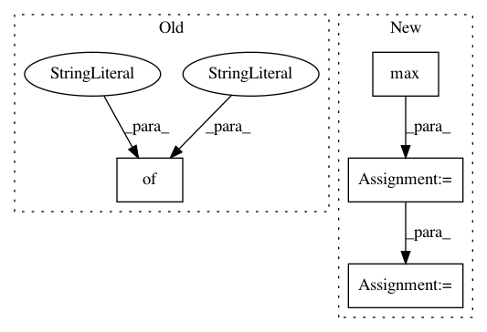

664d44824c130d91591cb2e508131e1e1475e668,QUANTAXIS/QAData/data_resample.py,,QA_data_tick_resample_1min,#Any#Any#,29
Before Change
resx = resx.append(_data1).append(_data2)
resx["vol"] = resx["vol"] * 100.0
resx["type"] = "1min"
resx = resx.rename(columns={"vol": "volume"})
return resx.reset_index().drop_duplicates().set_index(["datetime", "code"])
def QA_data_tick_resample(tick, type_="1min"):
After Change
_data1.loc[time(9, 31): time(9, 31), "low"] = _data1.loc[time(9, 26): time(9, 31), "low"].min()
_data1.loc[time(9, 31): time(9, 31), "vol"] = _data1.loc[time(9, 26): time(9, 31), "vol"].sum()
_data1.loc[time(9, 31): time(9, 31), "amount"] = _data1.loc[time(9, 26): time(9, 31), "amount"].sum()
_data1.loc[time(11, 30): time(11, 30), "high"] = _data1.loc[time(11, 30): time(11, 31), "high"].max()
_data1.loc[time(11, 30): time(11, 30), "low"] = _data1.loc[time(11, 30): time(11, 31), "low"].min()
_data1.loc[time(11, 30): time(11, 30), "close"] = _data1.loc[time(11, 31): time(11, 31), "close"].values
_data1.loc[time(11, 30): time(11, 30), "vol"] = _data1.loc[time(11, 30): time(11, 31), "vol"].sum()
_data1.loc[time(11, 30): time(11, 30), "amount"] = _data1.loc[time(11, 30): time(11, 31), "amount"].sum()
_data1 = _data1.loc[time(9, 31): time(11, 30)]
In pattern: SUPERPATTERN
Frequency: 3
Non-data size: 4
Instances
Project Name: QUANTAXIS/QUANTAXIS
Commit Name: 664d44824c130d91591cb2e508131e1e1475e668
Time: 2018-11-24
Author: huchen@szu.edu.cn
File Name: QUANTAXIS/QAData/data_resample.py
Class Name:
Method Name: QA_data_tick_resample_1min
Project Name: okfn-brasil/serenata-de-amor
Commit Name: ab46a26d588968cea6cedae0e98b5a169b3026c2
Time: 2019-02-16
Author: cuducos@users.noreply.github.com
File Name: jarbas/dashboard/admin/__init__.py
Class Name: ReimbursementSummaryModelAdmin
Method Name: get_cached_context
Project Name: kwgoodman/numerox
Commit Name: f4f853044babbcaea98da946b106fcf84e8ef79b
Time: 2018-04-27
Author: kwgoodman@gmail.com
File Name: numerox/report.py
Class Name:
Method Name: big_staker